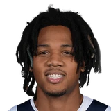

“It gives our defense a bit of a personality. Defenses are always best when they start on the ball with the type of approach and aggressiveness he brings. I think one of the most encouraging things about bringing Patrick here is not how excited we are he's coming, but he's really excited. He knows he's exactly the type of piece we need.”
What Chris Finch has said about other NBA players and coaches
54 quotes from Chris Finch about 35 other people around the NBA, newest first. Each one links to its original source.
Best quotes
Chris Finch on the Wolves offseason:
“I think we made great strides in addressing the needs. I think the front office, Gersson and his crew, did a really good job. We had limited bullets this year. We weren't in the draft, but we had priorities and we nailed every single one.”
Chris Finch on Anthony Edwards playing point guard and Wolves picking up LaMelo Ball:
“In the playoffs it was just double team after double team. We got to get him back to his natural position off the ball. We didn’t create enough catch and shoot threes for him and when you look at the numbers with LaMelo on the floor with his teammates and the efficiency and the production, I mean Kon Knueppel shot 7% higher from the three-point line with LaMelo on the floor than he did without. I mean that’s a massive stat for a great shooter and that’s a big bump for a great shooter.”
What NBA players and coaches have said about Chris Finch →
Quotes per season
Chris Finch talks most about
 Chris Finch on Anthony Edwards13 quotes
Chris Finch on Anthony Edwards13 quotes Chris Finch on Karl-Anthony Towns8 quotes
Chris Finch on Karl-Anthony Towns8 quotes Chris Finch on Rudy Gobert7 quotes
Chris Finch on Rudy Gobert7 quotes Chris Finch on LaMelo Ball3 quotes
Chris Finch on LaMelo Ball3 quotes- Chris Finch on Micah Nori2 quotes
 Chris Finch on Mike Conley2 quotes
Chris Finch on Mike Conley2 quotes Chris Finch on Patrick Beverley2 quotes
Chris Finch on Patrick Beverley2 quotes
Chris Finch on Terrence Shannon2 quotes Anthony Davis1 quote
Anthony Davis1 quote- Bryson Graham1 quote
 Devin Booker1 quote
Devin Booker1 quote Draymond Green1 quote
Draymond Green1 quote
2026-27
6 quotesFinch on Miller:
“We love Leonard. We got him super young. He put the work in. We could see growth. Itreally was all about opportunity and he’s getting one here. We’re tickled for him. When you look at our previous roster construction, the pathway for him to play wasn’t clear.”
Chris Finch on Leonard Millerx.com
Finch said of adding Ball.
“Always come in smiling. He and Anthony have a shared quality: they're really hard to stay mad at. And they do some things that you want to get mad at. And they have a reflective joy... We refered to ourselves as a moody team in the last couple of years at times and it's probably gotten in our way. We've traded moodiness for giddiness.”
Chris Finch on playing Ant and LaMelo together continued:
“...You see the TJ (Shannon)/Ayo combos are really, really good. So, you know, we might just double down, play those guys together, but we'll be ready to read it as we go along.”
“Anthony loves to root for his teammates; he's a fun-spirited but competitive guy, and we felt (LaMelo) might help lighten the mood around Anthony a little bit. We also felt like Anthony's competitive seriousness could also help LaMelo.”
Chris Finch on Anthony Edwards shaking hands early with Spurs:
“I think it’s probably one of the more misunderstood things that actually has happened… I saw him walk down there and then when he came back, I said, “You’re not going to the locker room, are you?”
Chris Finch on Anthony Edwards playing point guard and Wolves picking up LaMelo Ball:
“In the playoffs it was just double team after double team. We got to get him back to his natural position off the ball. We didn’t create enough catch and shoot threes for him and when you look at the numbers with LaMelo on the floor with his teammates and the efficiency and the production, I mean Kon Knueppel shot 7% higher from the three-point line with LaMelo on the floor than he did without. I mean that’s a massive stat for a great shooter and that’s a big bump for a great shooter.”
2025-26
9 quotesRyan Eichten: Chris Finch on what he sees for Terrence Shannon and Jaylen Clark:
“It's about creating pathways for those guys to be able to play. You might say like, isn't that the coach's job? But sometimes, you know, there's a gridlock. So we've gotta look at how we can either kind of change things around or get to a point where these guys can get a more consistent role.”
Chris Finch on Terrence Shannon, Jaylen ClarkBluesky
Chris Finch:
“I felt that going into Game 6, we tried to make some adjustments that were clearly not right. I kicked myself for doing it, just because I felt we didn't probably need to be as extreme. I flipped the matchups around. We put Rudy Gobert on Castle, and we started with Julius Randle on Victor Wembanyama, trying to mitigate Wembanyama's hot starts. We did a good job, but then Castle got loose on us. It wasn't a scheme that we were overly comfortable with. We've done it from time to time, and it maybe just wouldn't have been the time to do it.”
Chris Finch on Matt Lloyd missing out on the Bulls job:
“Congrats to Bryson Graham. I worked with Bryson in New Orleans for a number of years. He's a class act and an outstanding talent evaluator. I'm sure he will be a great pick for the Bulls.”
Chris Finch on Bryson Graham, Matt Lloydx.com
Jon Krawczynski:Chris Finch on Anthony Edwards' knee:
“I think it's definitely still something that we're managing and he's managing but all signs are pointing that it is getting better.”
Jon Krawczynski:Chris Finch on Naz Reid:
“Naz’s game today was awesome. That’s two games in a row it looks like he’s back a little bit more like himself. He found his touch. I really liked how he made a lot of gritty plays defensively.”
Jon Krawczynski:Chris Finch on Rudy Gobert:
“I think he’s far and away the leader for defensive player of the year.”
MrBuckBuck: Darren Wolfson: Kevin Durant vetoed a trade to the Timberwolves last summer because he didn't want to play under Chris Finch:
“I don't have all the inner-workings of this, but my understanding is KD had trepidation playing for Chris Finch... Superstars want to play with Anthony Edwards.”
Jon Krawczynski:Chris Finch on Micah Nori filling in:
“I'm trying to get this guy a job. How far do I have to go to get this guy off my staff?”
“Actually, when I really started to watch basketball … I was probably a secret Celtics fan that time, with Bird.”
2024-25
6 quotesJon Krawczynski:Chris Finch on the player frustration with Shai Gilgeous-Alexander calls:
“There was a lot of frustration out there. We talked about that before the series started. We have to be able to put that to the side and get on with a next-play mentality.”
Kerith Burke:Chris Finch on the dedensive plan for Jonathan Kuminga in game 4:
“I think you got to be a little bit more physical. I think he was dictating physicality on his matchup offensively, we got to try to stand up his drives a little bit earlier.”
Dave McMenamin:Wolves coach Chris Finch on the MIN fan who was disciplined by team security for harassing Draymond Green with racially-charged language in Game 2:
“There’s zero place for any of that in sports and societyand I was proud of the way the organization acted swiftly.”
Timberwolves coachChris Finch on Anthony Edwards:
“You’re the leader of the team, and you’ve got to come out and set the tone. If your shot’s not going, you still have to carry the energy.”
Chris Finch on Anthony Edwards:
“We need him to be aggressive. We need him to be Ant. He loves these moments. This is what he lives for.”
Chris Finch on JB Bickerstaff:
“It’s incredible. He’s given them an identity. Everywhere he’s been he’s done the same things — they’re tough, they defend …I voted for him for Coach of the Year. For me it’s not even a contest, what he’s done there.”
2023-24
12 quotesChris Finch on Anthony Edwards as the primary defender on Luka Doncic:
“He does a better job of getting over all those illegal screens they set for Luka.”
Jon Krawczynski:Chris Finch on the Rudy Gobert fine:
“I’d like to see the itemized receipt. If it’s 75 for the gesture then it must be 10K for the towel and 5 for the heating pad?”
“I think a lot of it started when KAT went out during his last injury, and (Edwards) faced triple-teams, quadruple-teams and complete swarms,”
Chris Finch on Micah Nori:
“We’re very much on the same wavelength. We share a brain. If you know Micah, it’s not the type of brain you want to share with most people. But we are very much in sync.”
Timberwolves coach Chris Finch on the challenge of stopping Devin Booker:
“He’s such an explosive player….we’re lucky enough to have a few guys to throw at him, but again, you don’t really stop these guys. You just gotta try to keep ‘em from hurting you time and time again.”
Chris Finch on Anthony Edwards' 51-point night:
“It's really hard to have a night like that. I mean, physically it is very hard to score 50 points. It takes a lot of energy and effort, and to do it with this type of efficiency is pretty impressive. But these things come. At times, when Ant has hunted things, I've just said, 'You know, you're going to be in the league for a long time, you're going to have many nights where you have opportunities to get these big nights. They're going to come to you if you keep playing the basketball game the way it should be played’. And that's what he did tonight, so I'm proud of him.”
Jon Krawczynski:Chris Finch on Davis:
“He should’ve dominated us. Size, length, all that stuff. Was in the paint for seven, eight seconds every time they shot the ball. It’s easy to go get it. But we got to do a better job of rooting him out.”
Chris Finch on stylistic changes that could happen in Karl-Anthony Towns' absence:
“Certainly last year when KAT was out, we kinda morphed into this exclusively spread pick and roll team, and we found a good rhythm there. I still would like to do some of the things that we have been doing. I think with Naz in there, it gives us opportunities to still do that, particularly with the season he's had and the growth he's had. There's a lot of things we can kinda twin up with what KAT does and what he does. So yeah, I don't want to abandon some of the other things completely, but I do believe we might get a little faster. But we'll see.”
Chris Finch on Kyle Anderson (out with a knee sprain):
“I don't know. It's, I would say, more day to day. I don't think it's super long, but you never know how these things respond over 48 hours.”
Chris Finch on what excites him about the acquisition of Monte Morris:
“He's a winner. He just kind of makes the right play. Super solid, low turnover guy. He's used to playing off of a lot of star players really well. I think it's a fairly seamless partnership with Mike. It's not like this other type of guard that you have to adjust to. Just his high basketball IQ, you can't have enough of those guys. I didn't cross paths with him in Denver. I had left the season before he came. But I've heard nothing but amazing things. I was able to talk to him, just really excited to have him.”
Christopher Hine:Chris Finch on Mike Conley:
“He’s everybody’s big brother. Calm, steady. Not super vocal in any rah-rah way but when he talks, everyone is listening. ... Whether he wanted to be the leader of this team or not, our guys look to him, and he’s taken it and run with it.”
Jon Krawczynski:Chris Finch on Anthony Edwards’ midrange game:
“When he gets in there and kicks out rather than shoot, it’s like triple the value of PPP over his pull-up jumper. It feels like last year he kind of came into the season doing something similar. There will be a course correction, I’m sure.”
2022-23
7 quotes“[Jamal] would bring the ball up, he’d get off of it, and he would cut off of Nikola. He didn’t always want the ball back just to run pick-and-rolls. So he would cut. He would curl his cuts, he would backdoor.”
Christopher Hine:Chris Finch on Mike Conley helping Rudy Gobert:
“I think you see it. The chemistry is obvious. We could’ve played another 40 games and just begin to develop that. ... He wants it to work. Understands how to make it work & can play well off each other. I think Rudy has got a pep in his step.”
Wolves coach Chris Finch on Rudy Gobert’s late dunk, which caused bad feelings with a few Jazz players:
“Don’t press us. If you’re gonna press us late, we’re gonna lay it in. I don’t make anything of it.”
Dane Moore:Chris Finch on how Rudy Gobert's role changes with Karl-Anthony Towns out:
“I don’t think it changes all the much, to be honest with you... We might be able to find him a bit more as a rolling threat, open up some opportunities there. But I don’t think it changes drastically.”
Christopher Hine:Chris Finch on Patrick Beverley:
“Pat just does a good job of keeping everyone kind of on edge in the locker room and around the building and anywhere in a 6-county radius. We loved him for that.”
Jon Krawczynski:Finch on Luka Garza:
“He's the perfect system fit for us. Great acquisition by our front office. He's a guy I think can really grow into our system here. He can stretch the floor and he can score around the basket. That's a great combo. Not a lot of bigs can do that.”
Dane Moore:Chris Finch on staying big in the playoffs, playing Rudy Gobert and Karl-Anthony Towns together:
“Certainly teams tend to go small in the playoffs, but we’re not. We’re not doing that. We’re going to have to figure out a way that all these things work.”
2021-22
11 quotesDane Moore:Chris Finch on what he told the Timberwolves ownership group about Tim Connelly (from his experience with him in Denver):
“As soon as you meet him, you’re gonna like him, and you’re gonna want him.”
Chris Finch on Karl-Anthony Towns only taking four shots in the Game 3 loss to Memphis:
“They swarm him everywhere. Three in the post, and at the top of the key, they're in on him. We gotta find him in the flow, and that's just how it's gonna have to be.”
Finch on Karl-Anthony Towns' bounce back:
“I wasn't worried at all. There was a lot of things that cross your mind, I was not worried about KAT's ability to bounce back and perform at an All NBA level. He's a franchise star. There haven't been many nights like he had Tuesday.”
Chris Finch on Karl-Anthony Towns in the play-in and going forward against Memphis:
“We knew what the defense was gonna look like. I thought he had a couple opportunities that maybe he pressed on. I’m not worried about KAT. I’m really not. He’ll be fine.”
“I haven’t really thought about it a lot, but my personal choice would be Taylor Jenkins of Memphis because of what they have done in terms of exceeding expectations,”
Jon Krawczynski:Finch on Edwards:
“I think he can be one of the best two-way players in the league.”
Dane Moore:Chris Finch on Karl-Anthony Towns participating in the 3-point contest:
“He's one of the best in the league irrespective of position on the floor. At workouts and in practice, he's easy to rebound for.”
Dane Moore:Chris Finch on Jaden McDaniels making the Rising Stars game:
“He has a lot of fans around the league, I do know that. A lot of coaches or opposing players know he’s a tough matchup, and he’s really playing well and, at the right time, caught the eye of the league.”
Dane Moore:Chris Finch on Malik Beasley's role this season:
“We’ve said that if you want to be a good team, you’re going to have seven or eight quality starter players. He’s a starter playerbut maybe best if the strength of his role with different lineups than the starting lineup.”
Chris Finch on the Wolves offseason:
“I think we made great strides in addressing the needs. I think the front office, Gersson and his crew, did a really good job. We had limited bullets this year. We weren't in the draft, but we had priorities and we nailed every single one.”
“It gives our defense a bit of a personality. Defenses are always best when they start on the ball with the type of approach and aggressiveness he brings. I think one of the most encouraging things about bringing Patrick here is not how excited we are he's coming, but he's really excited. He knows he's exactly the type of piece we need.”
2020-21
3 quotesChristopher Hine:Chris Finch on Jarrett Culver's surgery:
“He's still a big part of our future as we see it. So we want to be sure that we give him the best chance to have the proper preparation going into next year.”
Mirjam Swanson:T'Wolves Coach Chris Finch on what he remembers from working with Rondo in Nola:
“I love Rondo. Just a high level competitor. He's played in so many meaningful games, the regular season bores him... you don't have to overcoach him -- just tell him what you're looking for.”
Chris Finch on Karl-Anthony Towns playing on the anniversary of his mother's passing:
“The first year is always the hardest -- because the first everything comes around without them. He played inspirational tonight. This one's for him.”